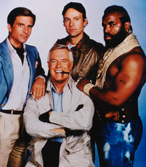

Les actions de la précédente rétrospective
| Action | Resp suivi | Statut |
|---|
| Demander à Jean-François Forget (aka JFF) l'organigramme des P.O pour chaque projets |
Nicolas Cauvet |
KO |
| Nicolas Cauvet devient le point d'entrée pour la table ronde |
Equipe Software |
??? |
| Définition du DONE + pré-requis pour les "tâches"/"colonnes" de la table ronde |
Olivier Girardot |
KO |
| Construire un kanban board spécifique pour la table ronde |
Edouard Strauser |
OK |
L'Équipe a-t-elle besoin de "coachs" pour entretenir et faire évoluer son organisation et ses pratiques

"coachs" ?
- Qui s'occupe de garder le(s) tableau(x) kanban au propre
- D'organiser les rétrospectives
- ...
C'est vous qui choisissez !
Nous allons procéder à un vote et si tout le monde n'est pas d'accord nous ferons une retrospective "classique"
Vote avec les pieds
Si ça ne vous interesse pas, c'est le moment de partir
A-t-on besoin de "coachs" ?
Règles du vote
- Voulons-nous utiliser cette rétrospective pour désigner des "coachs" ?
-
Tout le monde vote simultanément à main levée :
- pouce vers le haut : OUI
- pouce vers le bas : NON
- main à plat : SOUTIEN simple
- Si tous les votes sont SOUTIEN ou OUI alors la proposition est adoptée
- Sinon que faut-il pour que les "NON" disent OUI ou SOUTIEN
Fiche de poste du "coach" idéal
Perfection Game
- Une proposition est faite
- Chaque personne présente note la proposition de 1 à 10 (10 = perfection)
- Chaque note est accompagnée :
- dans la proposition voilà ce qui est bien (et c'est pourquoi j'ai mis cette note)
- qu'est-ce qui doit être fait pour que la proposition atteigne 10
Election sans candidat des "coachs"
Règles du scrutin
- Pas de candidats (donc pas de campagne électorale)
- Scrutin transparent (style "poker planning")
- On écrit le nom du "coach" sur un papier et on le montre tous en même temps
- Si pas consensus alors tour de table et chacun explique UNIQUEMENT pourquoi il vote pour "untel"
La prochaine rétrospective c'est quand ?
Next retrospective = JJ/MM/AAAA
THE END
BY Software
Any questions ?